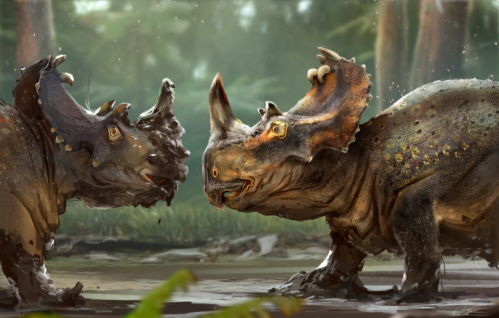

Був двоногим хижаком з масивним черепом, врівноваженим довгим, важким хвостом, відносно великими та сильними задніми лапами. Передні лапи тиранозавра були дуже малими й мали тільки два пальці. Хоча інші тероподи рівні або перевищують тиранозавра за розмірами, він був найбільшим відомим тиранозавровим і одним з найбільших відомих наземних м'ясоїдів, до 13 метрів завдовжки. оролівський тиранозавр був одним з найбільших наземних м'ясоїдів за всі часи, завдовжки до 13 м, вагою 4-7 тонн, хоча деякі скам'янілості (скам'янілість "Sue") вказують на вагу до 10 тонн. Найбільші відомі тиранозаврові черепи є до 1,5 м завдовжки. Череп мав відмінну від інших тероподів форму, був надзвичайно широким ззаду, з вузьким рилом, деякою мірою забезпечував бінокулярне бачення. Частина кісток, як, наприклад, носова, були зрощені, запобігаючи руху між ними. Великі отвори в черепі зменшували вагу і забезпечували місце для прикріплення м'язів. Зуби були кинджалоподібні, загнуті назад, овальні в поперечному перетині. Як і всі тиранозаврові, T. rex вирізнявся гетеродонтизмом, з передщелепними зубами спереду верхньої щелепи тісно розміщеними і D-подібними в поперечному перетині. Великі сліди укусів, знайдені на кістках інших динозаврів, вказують на те, що ці зуби могли прокусити тверду кістку. T. rex мав найбільшу силу укусу серед динозаврів і одну з найбільших серед всіх тварин. Часто знаходять зношені або поламані зуби, але на відміну від ссавців, зуби тиранозаврових безупинно замінювалися протягом життя тварини.
